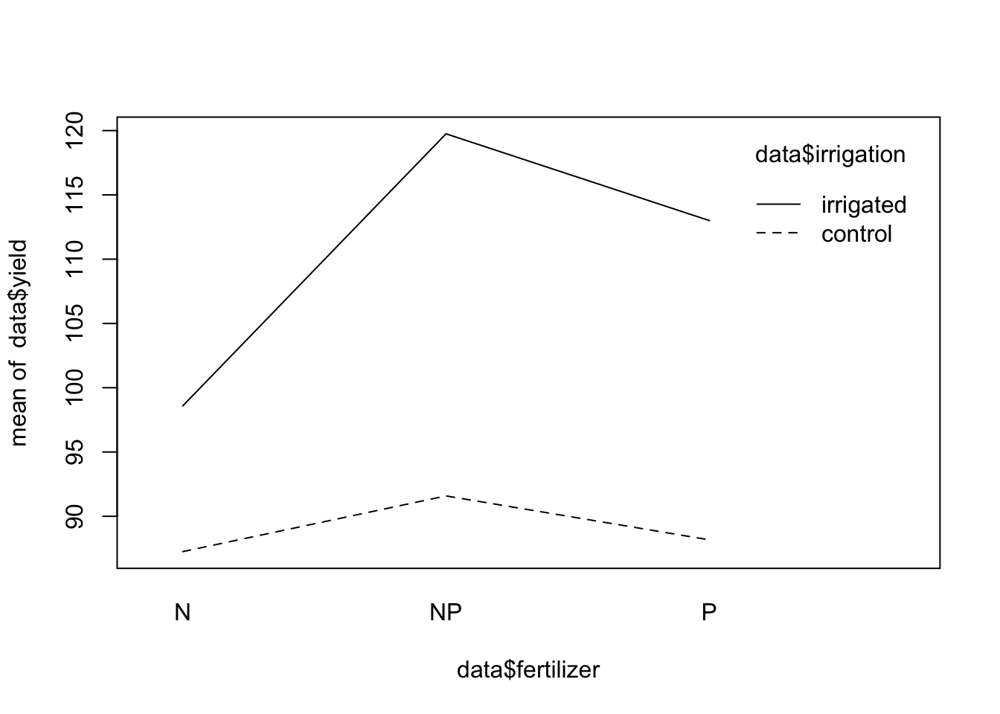

11 Ancova
11.1 One-way ANCOVA
Regresión + ANOVA.
La idea acá es combinar variables continuas con factores para analizar. Se puede pensar como un ANOVA donde hay una co-variable continua que es interesante para el estudio. O como una regresión con una co-variable factorial…
Ejemplo:
Experimento sobre el impacto del pastoreo en la producción de semillas de una planta. 40 plantas fueron asignadas a dos tratamientos, pastoreadas y no pastoreadas. Las plantas pastoreadas fueron expuestas a los conejos durante las dos primeras semanas de elongación del tallo. A continuación, se protegieron del pastoreo posterior mediante la instalación de una valla y se les permitió volver a crecer. Dado que el tamaño inicial de la planta se pensó que podía influir en la producción de fruta, se midió el diámetro de la parte superior del portainjerto (sobre la raíz) antes de plantar en maceta. Al final de la temporada de cultivo, se registró la producción de fruta (peso seco en miligramos) en cada una de las 40 plantas, y esto constituye la variable de respuesta en el siguiente análisis.
Data:
- Fuit (variable Y, contínua)
- Root (variable X, contínua)
- Grazing (variable X, factorial)¿Cómo afecta el tipo de pastoreo (factor) y el diámetro del tallo sobre la raíz (continua) a la producción de semilla y fruta de la planta?
Ejemplo:
El siguiente experimento, con el peso como variable de respuesta, incluía el genotipo y el sexo como dos variables explicativas categóricas y la edad como covariable continua. Hay seis niveles de genotipo y dos niveles de sexo.
Peso ~ genotipo(factor) + sexo(factor) + edad(numérica)
11.1.1 Two-way ANCOVA
Usar stepwise selección automática para hacer el modelo más simple?
Step() hace el trabajo similar a lo hecho en caret con los modelos de regresión: prueba todas las combinaciones de variables y elije la mas parsimoniosa según AIC:
m1 <- aov(Weight~Sex*Age*Genotype)
summary(m1) Df Sum Sq Mean Sq F value Pr(>F)
Sex 1 10.37 10.374 183.440 1.06e-15 ***
Age 1 10.77 10.770 190.450 6.03e-16 ***
Genotype 5 54.96 10.992 194.371 < 2e-16 ***
Sex:Age 1 0.05 0.049 0.865 0.358
Sex:Genotype 5 0.15 0.029 0.520 0.760
Age:Genotype 5 0.17 0.034 0.595 0.704
Sex:Age:Genotype 5 0.35 0.070 1.235 0.313
Residuals 36 2.04 0.057
---
Signif. codes: 0 '***' 0.001 '**' 0.01 '*' 0.05 '.' 0.1 ' ' 1m2 <- step(m1)Start: AIC=-155.01
Weight ~ Sex * Age * Genotype
Df Sum of Sq RSS AIC
- Sex:Age:Genotype 5 0.34912 2.3849 -155.51
<none> 2.0358 -155.01
Step: AIC=-155.51
Weight ~ Sex + Age + Genotype + Sex:Age + Sex:Genotype + Age:Genotype
Df Sum of Sq RSS AIC
- Sex:Genotype 5 0.146901 2.5318 -161.92
- Age:Genotype 5 0.168136 2.5531 -161.42
- Sex:Age 1 0.048937 2.4339 -156.29
<none> 2.3849 -155.51
Step: AIC=-161.92
Weight ~ Sex + Age + Genotype + Sex:Age + Age:Genotype
Df Sum of Sq RSS AIC
- Age:Genotype 5 0.168136 2.7000 -168.07
- Sex:Age 1 0.048937 2.5808 -162.78
<none> 2.5318 -161.92
Step: AIC=-168.07
Weight ~ Sex + Age + Genotype + Sex:Age
Df Sum of Sq RSS AIC
- Sex:Age 1 0.049 2.749 -168.989
<none> 2.700 -168.066
- Genotype 5 54.958 57.658 5.612
Step: AIC=-168.99
Weight ~ Sex + Age + Genotype
Df Sum of Sq RSS AIC
<none> 2.749 -168.989
- Sex 1 10.374 13.122 -77.201
- Age 1 10.770 13.519 -75.415
- Genotype 5 54.958 57.707 3.662summary(m2) Df Sum Sq Mean Sq F value Pr(>F)
Sex 1 10.37 10.374 196.2 <2e-16 ***
Age 1 10.77 10.770 203.7 <2e-16 ***
Genotype 5 54.96 10.992 207.9 <2e-16 ***
Residuals 52 2.75 0.053
---
Signif. codes: 0 '***' 0.001 '**' 0.01 '*' 0.05 '.' 0.1 ' ' 1summary.lm(m2)
Call:
aov(formula = Weight ~ Sex + Age + Genotype)
Residuals:
Min 1Q Median 3Q Max
-0.40005 -0.15120 -0.01668 0.16953 0.49227
Coefficients:
Estimate Std. Error t value Pr(>|t|)
(Intercept) 7.93701 0.10066 78.851 < 2e-16 ***
Sexmale -0.83161 0.05937 -14.008 < 2e-16 ***
Age 0.29958 0.02099 14.273 < 2e-16 ***
GenotypeCloneB 0.96778 0.10282 9.412 8.07e-13 ***
GenotypeCloneC -1.04361 0.10282 -10.149 6.21e-14 ***
GenotypeCloneD 0.82396 0.10282 8.013 1.21e-10 ***
GenotypeCloneE -0.87540 0.10282 -8.514 1.98e-11 ***
GenotypeCloneF 1.53460 0.10282 14.925 < 2e-16 ***
---
Signif. codes: 0 '***' 0.001 '**' 0.01 '*' 0.05 '.' 0.1 ' ' 1
Residual standard error: 0.2299 on 52 degrees of freedom
Multiple R-squared: 0.9651, Adjusted R-squared: 0.9604
F-statistic: 205.7 on 7 and 52 DF, p-value: < 2.2e-16Diferencias de Modelos
anova(m1, m2)Analysis of Variance Table
Model 1: Weight ~ Sex * Age * Genotype
Model 2: Weight ~ Sex + Age + Genotype
Res.Df RSS Df Sum of Sq F Pr(>F)
1 36 2.0358
2 52 2.7489 -16 -0.7131 0.7881 0.6883Normalidad en los Residuos
shapiro.test(m2$residuals)
Shapiro-Wilk normality test
data: m2$residuals
W = 0.98321, p-value = 0.5782Distribución de los residuos
11.2 Sección Práctica Ancova
11.3 ANOVA con parcelas dividadas
11.3.1 Carga de datos
Tipos de suelo y cosecha (yield) en cultivos
data <- read.table('https://raw.githubusercontent.com/shifteight/R-lang/master/TRB/data/splityield.txt',
header = T, stringsAsFactors = TRUE)
# estructura de los datos
str(data)'data.frame': 72 obs. of 5 variables:
$ yield : int 90 95 107 92 89 92 81 92 93 80 ...
$ block : Factor w/ 4 levels "A","B","C","D": 1 1 1 1 1 1 1 1 1 1 ...
$ irrigation: Factor w/ 2 levels "control","irrigated": 1 1 1 1 1 1 1 1 1 2 ...
$ density : Factor w/ 3 levels "high","low","medium": 2 2 2 3 3 3 1 1 1 2 ...
$ fertilizer: Factor w/ 3 levels "N","NP","P": 1 3 2 1 3 2 1 3 2 1 ...summary(data) yield block irrigation density fertilizer
Min. : 60.00 A:18 control :36 high :24 N :24
1st Qu.: 86.00 B:18 irrigated:36 low :24 NP:24
Median : 95.00 C:18 medium:24 P :24
Mean : 99.72 D:18
3rd Qu.:114.00
Max. :136.00 Fertilizantes:
- N: Nitrogeno
- P: Fósforo
11.3.2 Modelo ANOVA
# ANOVA normal que hacemos siempre
model1 <- aov(yield ~ irrigation*density*fertilizer, data = data)
summary(model1) Df Sum Sq Mean Sq F value Pr(>F)
irrigation 1 8278 8278 59.575 2.81e-10 ***
density 2 1758 879 6.328 0.00340 **
fertilizer 2 1977 989 7.116 0.00181 **
irrigation:density 2 2747 1374 9.885 0.00022 ***
irrigation:fertilizer 2 953 477 3.431 0.03956 *
density:fertilizer 4 305 76 0.549 0.70082
irrigation:density:fertilizer 4 235 59 0.422 0.79183
Residuals 54 7503 139
---
Signif. codes: 0 '***' 0.001 '**' 0.01 '*' 0.05 '.' 0.1 ' ' 111.3.3 Modelo ANOVA con declaracion de Error
Se debe poner los bloques de mayor a menor tamano separados por un parentesis. El tamano mas pequeno no es necesario ponerlo
(por defecto se sabe que el que no se pone es el ultimo)
model2 <- aov(yield ~ irrigation * density * fertilizer + Error(block / irrigation / density), data = data)
summary(model2)
Error: block
Df Sum Sq Mean Sq F value Pr(>F)
Residuals 3 194.4 64.81
Error: block:irrigation
Df Sum Sq Mean Sq F value Pr(>F)
irrigation 1 8278 8278 17.59 0.0247 *
Residuals 3 1412 471
---
Signif. codes: 0 '***' 0.001 '**' 0.01 '*' 0.05 '.' 0.1 ' ' 1
Error: block:irrigation:density
Df Sum Sq Mean Sq F value Pr(>F)
density 2 1758 879.2 3.784 0.0532 .
irrigation:density 2 2747 1373.5 5.912 0.0163 *
Residuals 12 2788 232.3
---
Signif. codes: 0 '***' 0.001 '**' 0.01 '*' 0.05 '.' 0.1 ' ' 1
Error: Within
Df Sum Sq Mean Sq F value Pr(>F)
fertilizer 2 1977.4 988.7 11.449 0.000142 ***
irrigation:fertilizer 2 953.4 476.7 5.520 0.008108 **
density:fertilizer 4 304.9 76.2 0.883 0.484053
irrigation:density:fertilizer 4 234.7 58.7 0.680 0.610667
Residuals 36 3108.8 86.4
---
Signif. codes: 0 '***' 0.001 '**' 0.01 '*' 0.05 '.' 0.1 ' ' 111.3.4 Graficos de interacción
# ver interacciones entre fertilizacion y riego
interaction.plot(data$fertilizer, data$irrigation, data$yield)
# ver interacciones entre densidad y riego
interaction.plot(data$density, data$irrigation, data$yield)11.3.5 Interacción entre variables
Interaccion entre variables usando el paquete effects. Se debe usar modelo lm en este caso
#
library(effects)Loading required package: carDatalattice theme set by effectsTheme()
See ?effectsTheme for details.# hacer un modelo lm. No es necasario los terminos de error, ya que es solo para ver interacciones en un grafico
model2_b <- lm(yield ~ irrigation*density*fertilizer, data = data) # es el mismo que model1, pero con la funcion lm
effects <- allEffects(model2_b)
plot(effects)11.4 ANOVA con muestreo anidado (bloque)
11.4.1 Lectura de Datos
## Carga de datos ---------------------------------------------------------
data <- read.csv('../data/crop.data.csv')
str(data)'data.frame': 96 obs. of 4 variables:
$ density : int 1 2 1 2 1 2 1 2 1 2 ...
$ block : int 1 2 3 4 1 2 3 4 1 2 ...
$ fertilizer: int 1 1 1 1 1 1 1 1 1 1 ...
$ yield : num 177 178 176 178 177 ...# se fijan, hay tratamientos de fertilizacion 1, 2, 3 en cada bloque
data[data$block == 4, ] density block fertilizer yield
4 2 4 1 177.7036
8 2 4 1 177.0612
12 2 4 1 177.0305
16 2 4 1 176.0084
20 2 4 1 176.9188
24 2 4 1 176.8179
28 2 4 1 177.1649
32 2 4 1 175.8828
36 2 4 2 177.3608
40 2 4 2 177.9980
44 2 4 2 177.0341
48 2 4 2 177.1977
52 2 4 2 176.8191
56 2 4 2 176.6683
60 2 4 2 176.8789
64 2 4 2 177.3526
68 2 4 3 177.5403
72 2 4 3 176.4308
76 2 4 3 177.3442
80 2 4 3 179.0609
84 2 4 3 177.7945
88 2 4 3 177.6328
92 2 4 3 177.4053
96 2 4 3 177.118211.4.2 one-way ANOVA
summary(aov(yield ~ fertilizer, data = data)) Df Sum Sq Mean Sq F value Pr(>F)
fertilizer 1 5.74 5.743 14.91 0.000207 ***
Residuals 94 36.21 0.385
---
Signif. codes: 0 '***' 0.001 '**' 0.01 '*' 0.05 '.' 0.1 ' ' 1TukeyHSD(aov(yield ~ as.factor(fertilizer), data = data)) Tukey multiple comparisons of means
95% family-wise confidence level
Fit: aov(formula = yield ~ as.factor(fertilizer), data = data)
$`as.factor(fertilizer)`
diff lwr upr p adj
2-1 0.1761687 -0.19371896 0.5460564 0.4954705
3-1 0.5991256 0.22923789 0.9690133 0.0006125
3-2 0.4229569 0.05306916 0.7928445 0.020873511.4.3 two-way ANOVA
summary(aov(yield ~ fertilizer + density, data = data)) Df Sum Sq Mean Sq F value Pr(>F)
fertilizer 1 5.743 5.743 17.18 7.49e-05 ***
density 1 5.122 5.122 15.32 0.000173 ***
Residuals 93 31.089 0.334
---
Signif. codes: 0 '***' 0.001 '**' 0.01 '*' 0.05 '.' 0.1 ' ' 1summary(aov(yield ~ fertilizer * density, data = data)) Df Sum Sq Mean Sq F value Pr(>F)
fertilizer 1 5.743 5.743 17.078 7.9e-05 ***
density 1 5.122 5.122 15.230 0.000181 ***
fertilizer:density 1 0.150 0.150 0.447 0.505630
Residuals 92 30.939 0.336
---
Signif. codes: 0 '***' 0.001 '**' 0.01 '*' 0.05 '.' 0.1 ' ' 1## Agregar bloque ----------------------------------------------------------
summary(aov(yield ~ fertilizer + density + block, data = data)) Df Sum Sq Mean Sq F value Pr(>F)
fertilizer 1 5.743 5.743 17.265 7.27e-05 ***
density 1 5.122 5.122 15.397 0.000168 ***
block 1 0.486 0.486 1.461 0.229823
Residuals 92 30.603 0.333
---
Signif. codes: 0 '***' 0.001 '**' 0.01 '*' 0.05 '.' 0.1 ' ' 1# LO IMPORTANTE ACA ES QUE LA IMPORTANCIA DEL BLOQUE ES BAJA. SE LOGRA ELIMINAR SU EFECTO11.5 one-way ANCOVA
11.5.1 Cargar Datos
## Carga de datos ----------------------------------------------------------
regrowth <- read.table('https://raw.githubusercontent.com/shifteight/R-lang/master/TRB/data/ipomopsis.txt',
header = T, stringsAsFactors = TRUE)
names(regrowth)[1] "Root" "Fruit" "Grazing"str(regrowth)'data.frame': 40 obs. of 3 variables:
$ Root : num 6.22 6.49 4.92 5.13 5.42 ...
$ Fruit : num 59.8 61 14.7 19.3 34.2 ...
$ Grazing: Factor w/ 2 levels "Grazed","Ungrazed": 2 2 2 2 2 2 2 2 2 2 ...levels(regrowth$Grazing)[1] "Grazed" "Ungrazed"11.5.2 Ploteo relacion entre variables
# plot de la relacion entre cantidad de fruta, tamano de raiz y clases de riego
plot(regrowth$Root, regrowth$Fruit, pch = 16 + as.numeric(regrowth$Grazing),
col = c("blue", "red")[as.numeric(regrowth$Grazing)],
xlab = "Tamaño de la raíz", ylab = "Cantidad de fruta")
abline(lm(Fruit[Grazing == "Grazed"] ~ Root[Grazing == "Grazed"], data = regrowth),
lty = 2, col = "blue")
abline(lm(Fruit[Grazing == "Ungrazed"] ~ Root[Grazing == "Ungrazed"], data = regrowth),
lty = 2, col = "red")
legend('topleft', legend = c('Grazed', 'Ungrazed'), lwd = 2, col = c("blue", "red"))11.5.3 ANOVA
summary(aov(Fruit ~ Grazing, data = regrowth)) Df Sum Sq Mean Sq F value Pr(>F)
Grazing 1 2910 2910.4 5.309 0.0268 *
Residuals 38 20833 548.2
---
Signif. codes: 0 '***' 0.001 '**' 0.01 '*' 0.05 '.' 0.1 ' ' 111.5.4 Regresion
summary(lm(Fruit ~ Root, data = regrowth))
Call:
lm(formula = Fruit ~ Root, data = regrowth)
Residuals:
Min 1Q Median 3Q Max
-29.3844 -10.4447 -0.7574 10.7606 23.7556
Coefficients:
Estimate Std. Error t value Pr(>|t|)
(Intercept) -41.286 10.723 -3.850 0.000439 ***
Root 14.022 1.463 9.584 1.1e-11 ***
---
Signif. codes: 0 '***' 0.001 '**' 0.01 '*' 0.05 '.' 0.1 ' ' 1
Residual standard error: 13.52 on 38 degrees of freedom
Multiple R-squared: 0.7073, Adjusted R-squared: 0.6996
F-statistic: 91.84 on 1 and 38 DF, p-value: 1.099e-1111.5.5 ANCOCA
# ANCOVA
ancova <- aov(Fruit ~ Root*Grazing, data = regrowth)
# Root -> variable continua
# Grazing -> Factor11.5.6 Resumen de los Modelos
summary(ancova) Df Sum Sq Mean Sq F value Pr(>F)
Root 1 16795 16795 359.968 < 2e-16 ***
Grazing 1 5264 5264 112.832 1.21e-12 ***
Root:Grazing 1 5 5 0.103 0.75
Residuals 36 1680 47
---
Signif. codes: 0 '***' 0.001 '**' 0.01 '*' 0.05 '.' 0.1 ' ' 1summary.lm(ancova)
Call:
aov(formula = Fruit ~ Root * Grazing, data = regrowth)
Residuals:
Min 1Q Median 3Q Max
-17.3177 -2.8320 0.1247 3.8511 17.1313
Coefficients:
Estimate Std. Error t value Pr(>|t|)
(Intercept) -125.173 12.811 -9.771 1.15e-11 ***
Root 23.240 1.531 15.182 < 2e-16 ***
GrazingUngrazed 30.806 16.842 1.829 0.0757 .
Root:GrazingUngrazed 0.756 2.354 0.321 0.7500
---
Signif. codes: 0 '***' 0.001 '**' 0.01 '*' 0.05 '.' 0.1 ' ' 1
Residual standard error: 6.831 on 36 degrees of freedom
Multiple R-squared: 0.9293, Adjusted R-squared: 0.9234
F-statistic: 157.6 on 3 and 36 DF, p-value: < 2.2e-1611.5.7 Simplificacion del modelo
Alternativa 1
ancova2 <- aov(Fruit ~ Grazing + Root, data = regrowth)
summary(ancova2) Df Sum Sq Mean Sq F value Pr(>F)
Grazing 1 2910 2910 63.93 1.4e-09 ***
Root 1 19149 19149 420.62 < 2e-16 ***
Residuals 37 1684 46
---
Signif. codes: 0 '***' 0.001 '**' 0.01 '*' 0.05 '.' 0.1 ' ' 1Alternativa 2
ancova2 <- update(ancova, ~ . - Grazing:Root)
summary(ancova2) Df Sum Sq Mean Sq F value Pr(>F)
Root 1 16795 16795 368.9 < 2e-16 ***
Grazing 1 5264 5264 115.6 6.11e-13 ***
Residuals 37 1684 46
---
Signif. codes: 0 '***' 0.001 '**' 0.01 '*' 0.05 '.' 0.1 ' ' 1Comparación de las simplificaciones
# la diferencia es significativa?
anova(ancova, ancova2)Analysis of Variance Table
Model 1: Fruit ~ Root * Grazing
Model 2: Fruit ~ Root + Grazing
Res.Df RSS Df Sum of Sq F Pr(>F)
1 36 1679.7
2 37 1684.5 -1 -4.8122 0.1031 0.75AIC(ancova, ancova2) # AIC ancova2 es menor df AIC
ancova 5 273.0135
ancova2 4 271.1279summary(ancova2) Df Sum Sq Mean Sq F value Pr(>F)
Root 1 16795 16795 368.9 < 2e-16 ***
Grazing 1 5264 5264 115.6 6.11e-13 ***
Residuals 37 1684 46
---
Signif. codes: 0 '***' 0.001 '**' 0.01 '*' 0.05 '.' 0.1 ' ' 1summary.lm(ancova2)
Call:
aov(formula = Fruit ~ Root + Grazing, data = regrowth)
Residuals:
Min 1Q Median 3Q Max
-17.1920 -2.8224 0.3223 3.9144 17.3290
Coefficients:
Estimate Std. Error t value Pr(>|t|)
(Intercept) -127.829 9.664 -13.23 1.35e-15 ***
Root 23.560 1.149 20.51 < 2e-16 ***
GrazingUngrazed 36.103 3.357 10.75 6.11e-13 ***
---
Signif. codes: 0 '***' 0.001 '**' 0.01 '*' 0.05 '.' 0.1 ' ' 1
Residual standard error: 6.747 on 37 degrees of freedom
Multiple R-squared: 0.9291, Adjusted R-squared: 0.9252
F-statistic: 242.3 on 2 and 37 DF, p-value: < 2.2e-16# Intercept es Grazinggrazed (es la primera variable)Evaluación de Modelos con la función step()
Se puede hacer una simplificacion de modelos automaticamente tambien usando la funcion step() la funcion es similar a lo que hicimos anteriormente en regresión, prueba todas las combinaicones de terminos y variables
## step() -----------------------------------------------------------------
step(ancova)Start: AIC=157.5
Fruit ~ Root * Grazing
Df Sum of Sq RSS AIC
- Root:Grazing 1 4.8122 1684.5 155.61
<none> 1679.7 157.50
Step: AIC=155.61
Fruit ~ Root + Grazing
Df Sum of Sq RSS AIC
<none> 1684.5 155.61
- Grazing 1 5264.4 6948.8 210.30
- Root 1 19148.9 20833.4 254.22Call:
aov(formula = Fruit ~ Root + Grazing, data = regrowth)
Terms:
Root Grazing Residuals
Sum of Squares 16795.002 5264.374 1684.461
Deg. of Freedom 1 1 37
Residual standard error: 6.747294
Estimated effects may be unbalancedancova2 <- step(ancova)Start: AIC=157.5
Fruit ~ Root * Grazing
Df Sum of Sq RSS AIC
- Root:Grazing 1 4.8122 1684.5 155.61
<none> 1679.7 157.50
Step: AIC=155.61
Fruit ~ Root + Grazing
Df Sum of Sq RSS AIC
<none> 1684.5 155.61
- Grazing 1 5264.4 6948.8 210.30
- Root 1 19148.9 20833.4 254.22summary.aov(ancova2) Df Sum Sq Mean Sq F value Pr(>F)
Root 1 16795 16795 368.9 < 2e-16 ***
Grazing 1 5264 5264 115.6 6.11e-13 ***
Residuals 37 1684 46
---
Signif. codes: 0 '***' 0.001 '**' 0.01 '*' 0.05 '.' 0.1 ' ' 111.6 ANCOVA con dos factores y una variable continua
11.6.1 Cargar los Datos
Gain <- read.table('https://raw.githubusercontent.com/shifteight/R-lang/master/TRB/data/Gain.txt',
header=T, stringsAsFactors = TRUE)
attach(Gain)The following objects are masked from Gain (pos = 5):
Age, Genotype, Score, Sex, Weightnames(Gain)[1] "Weight" "Sex" "Age" "Genotype" "Score" str(Gain)'data.frame': 60 obs. of 5 variables:
$ Weight : num 7.45 8 7.71 8.35 8.45 ...
$ Sex : Factor w/ 2 levels "female","male": 2 2 2 2 2 2 2 2 2 2 ...
$ Age : int 1 2 3 4 5 1 2 3 4 5 ...
$ Genotype: Factor w/ 6 levels "CloneA","CloneB",..: 1 1 1 1 1 2 2 2 2 2 ...
$ Score : num 4 4 4 4 4 5 5 5 5 5 ...11.6.2 ANCOVA multiple
m1 <- aov(Weight ~ Sex*Age*Genotype) # argumento data no se utiliza
# Sex -> factor
# Age -> variable continua
# Genotype -> factorsummary(m1) Df Sum Sq Mean Sq F value Pr(>F)
Sex 1 10.37 10.374 183.440 1.06e-15 ***
Age 1 10.77 10.770 190.450 6.03e-16 ***
Genotype 5 54.96 10.992 194.371 < 2e-16 ***
Sex:Age 1 0.05 0.049 0.865 0.358
Sex:Genotype 5 0.15 0.029 0.520 0.760
Age:Genotype 5 0.17 0.034 0.595 0.704
Sex:Age:Genotype 5 0.35 0.070 1.235 0.313
Residuals 36 2.04 0.057
---
Signif. codes: 0 '***' 0.001 '**' 0.01 '*' 0.05 '.' 0.1 ' ' 1summary.lm(m1)
Call:
aov(formula = Weight ~ Sex * Age * Genotype)
Residuals:
Min 1Q Median 3Q Max
-0.40218 -0.12043 -0.01065 0.12592 0.44687
Coefficients:
Estimate Std. Error t value Pr(>|t|)
(Intercept) 7.80053 0.24941 31.276 < 2e-16 ***
Sexmale -0.51966 0.35272 -1.473 0.14936
Age 0.34950 0.07520 4.648 4.39e-05 ***
GenotypeCloneB 1.19870 0.35272 3.398 0.00167 **
GenotypeCloneC -0.41751 0.35272 -1.184 0.24429
GenotypeCloneD 0.95600 0.35272 2.710 0.01023 *
GenotypeCloneE -0.81604 0.35272 -2.314 0.02651 *
GenotypeCloneF 1.66851 0.35272 4.730 3.41e-05 ***
Sexmale:Age -0.11283 0.10635 -1.061 0.29579
Sexmale:GenotypeCloneB -0.31716 0.49882 -0.636 0.52891
Sexmale:GenotypeCloneC -1.06234 0.49882 -2.130 0.04010 *
Sexmale:GenotypeCloneD -0.73547 0.49882 -1.474 0.14906
Sexmale:GenotypeCloneE -0.28533 0.49882 -0.572 0.57087
Sexmale:GenotypeCloneF -0.19839 0.49882 -0.398 0.69319
Age:GenotypeCloneB -0.10146 0.10635 -0.954 0.34643
Age:GenotypeCloneC -0.20825 0.10635 -1.958 0.05799 .
Age:GenotypeCloneD -0.01757 0.10635 -0.165 0.86970
Age:GenotypeCloneE -0.03825 0.10635 -0.360 0.72123
Age:GenotypeCloneF -0.05512 0.10635 -0.518 0.60743
Sexmale:Age:GenotypeCloneB 0.15469 0.15040 1.029 0.31055
Sexmale:Age:GenotypeCloneC 0.35322 0.15040 2.349 0.02446 *
Sexmale:Age:GenotypeCloneD 0.19227 0.15040 1.278 0.20929
Sexmale:Age:GenotypeCloneE 0.13203 0.15040 0.878 0.38585
Sexmale:Age:GenotypeCloneF 0.08709 0.15040 0.579 0.56616
---
Signif. codes: 0 '***' 0.001 '**' 0.01 '*' 0.05 '.' 0.1 ' ' 1
Residual standard error: 0.2378 on 36 degrees of freedom
Multiple R-squared: 0.9742, Adjusted R-squared: 0.9577
F-statistic: 59.06 on 23 and 36 DF, p-value: < 2.2e-1611.7 Evaluación de Modelo Ancova Multiple
## step() -----------------------------------------------------------------
m2 <- step(m1)Start: AIC=-155.01
Weight ~ Sex * Age * Genotype
Df Sum of Sq RSS AIC
- Sex:Age:Genotype 5 0.34912 2.3849 -155.51
<none> 2.0358 -155.01
Step: AIC=-155.51
Weight ~ Sex + Age + Genotype + Sex:Age + Sex:Genotype + Age:Genotype
Df Sum of Sq RSS AIC
- Sex:Genotype 5 0.146901 2.5318 -161.92
- Age:Genotype 5 0.168136 2.5531 -161.42
- Sex:Age 1 0.048937 2.4339 -156.29
<none> 2.3849 -155.51
Step: AIC=-161.92
Weight ~ Sex + Age + Genotype + Sex:Age + Age:Genotype
Df Sum of Sq RSS AIC
- Age:Genotype 5 0.168136 2.7000 -168.07
- Sex:Age 1 0.048937 2.5808 -162.78
<none> 2.5318 -161.92
Step: AIC=-168.07
Weight ~ Sex + Age + Genotype + Sex:Age
Df Sum of Sq RSS AIC
- Sex:Age 1 0.049 2.749 -168.989
<none> 2.700 -168.066
- Genotype 5 54.958 57.658 5.612
Step: AIC=-168.99
Weight ~ Sex + Age + Genotype
Df Sum of Sq RSS AIC
<none> 2.749 -168.989
- Sex 1 10.374 13.122 -77.201
- Age 1 10.770 13.519 -75.415
- Genotype 5 54.958 57.707 3.662summary(m2) Df Sum Sq Mean Sq F value Pr(>F)
Sex 1 10.37 10.374 196.2 <2e-16 ***
Age 1 10.77 10.770 203.7 <2e-16 ***
Genotype 5 54.96 10.992 207.9 <2e-16 ***
Residuals 52 2.75 0.053
---
Signif. codes: 0 '***' 0.001 '**' 0.01 '*' 0.05 '.' 0.1 ' ' 1summary.lm(m2)
Call:
aov(formula = Weight ~ Sex + Age + Genotype)
Residuals:
Min 1Q Median 3Q Max
-0.40005 -0.15120 -0.01668 0.16953 0.49227
Coefficients:
Estimate Std. Error t value Pr(>|t|)
(Intercept) 7.93701 0.10066 78.851 < 2e-16 ***
Sexmale -0.83161 0.05937 -14.008 < 2e-16 ***
Age 0.29958 0.02099 14.273 < 2e-16 ***
GenotypeCloneB 0.96778 0.10282 9.412 8.07e-13 ***
GenotypeCloneC -1.04361 0.10282 -10.149 6.21e-14 ***
GenotypeCloneD 0.82396 0.10282 8.013 1.21e-10 ***
GenotypeCloneE -0.87540 0.10282 -8.514 1.98e-11 ***
GenotypeCloneF 1.53460 0.10282 14.925 < 2e-16 ***
---
Signif. codes: 0 '***' 0.001 '**' 0.01 '*' 0.05 '.' 0.1 ' ' 1
Residual standard error: 0.2299 on 52 degrees of freedom
Multiple R-squared: 0.9651, Adjusted R-squared: 0.9604
F-statistic: 205.7 on 7 and 52 DF, p-value: < 2.2e-16anova(m1, m2)Analysis of Variance Table
Model 1: Weight ~ Sex * Age * Genotype
Model 2: Weight ~ Sex + Age + Genotype
Res.Df RSS Df Sum of Sq F Pr(>F)
1 36 2.0358
2 52 2.7489 -16 -0.7131 0.7881 0.6883AIC(m1, m2) df AIC
m1 25 17.265355
m2 9 3.28397811.7.1 Normalidad de residuos
# shapiro test de normalidad en los residuos
shapiro.test(m2$residuals) # son normales
Shapiro-Wilk normality test
data: m2$residuals
W = 0.98321, p-value = 0.5782par(mfrow = c(2, 2))
plot(m2)
dev.off()null device
1 11.7.2 Visualización relación entre variables
Gráfico de las relaciones entre peso y edad en relacion a las clases de genotipo.
plot(Age, Weight, type = "n")
colours <- c("green", "red", "black", "blue")
lines <- c(1, 2)
symbols <- c(16, 17)
points(Age, Weight, pch = symbols[as.numeric(Sex)],
col = colours[as.numeric(Genotype)])
xv <- c(1, 5)
for (i in 1:2) {
for (j in 1:4) {
a <- coef(m2)[1]+(i>1)* coef(m2)[2]+(j>1)*coef(m2)[j+2]
b <- coef(m2)[3]
yv <- a+b*xv
lines(xv,yv,lty=lines[i],col=colours[j]) } }